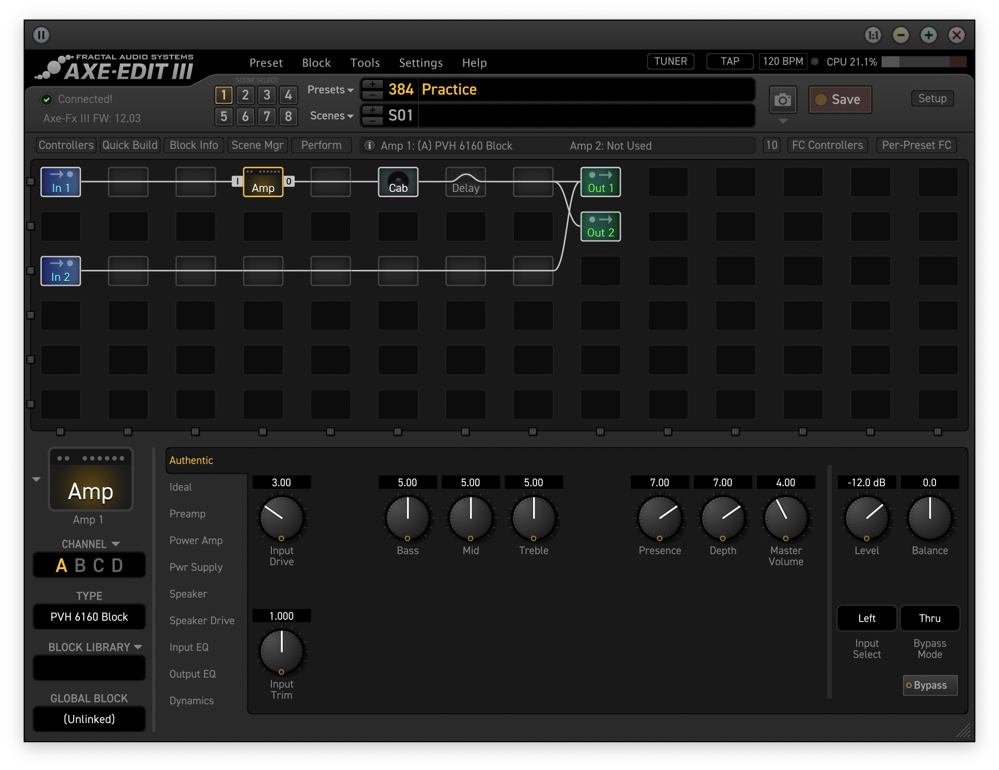
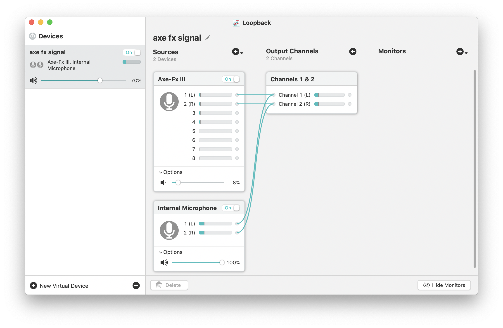
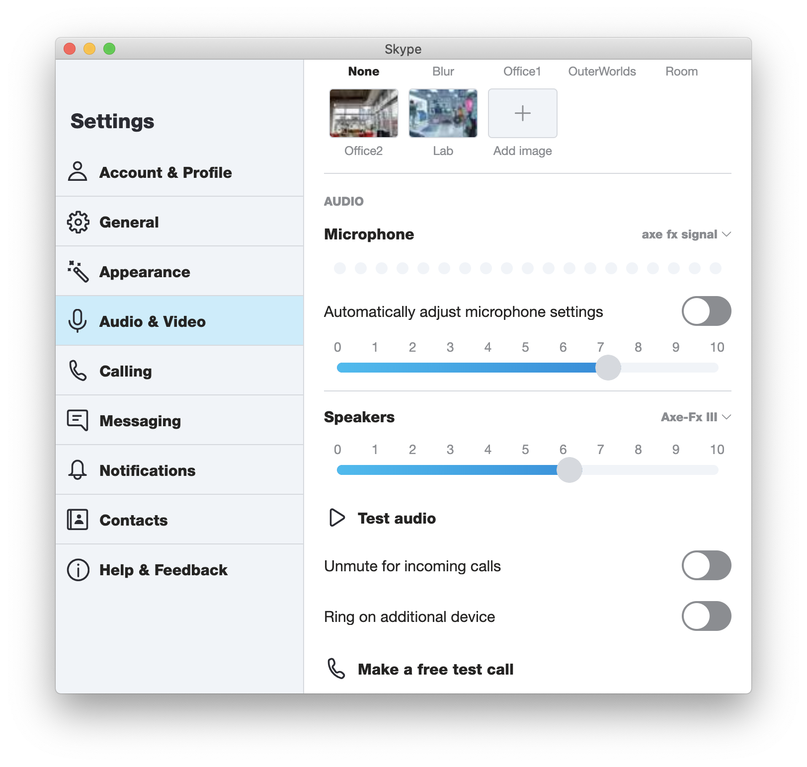
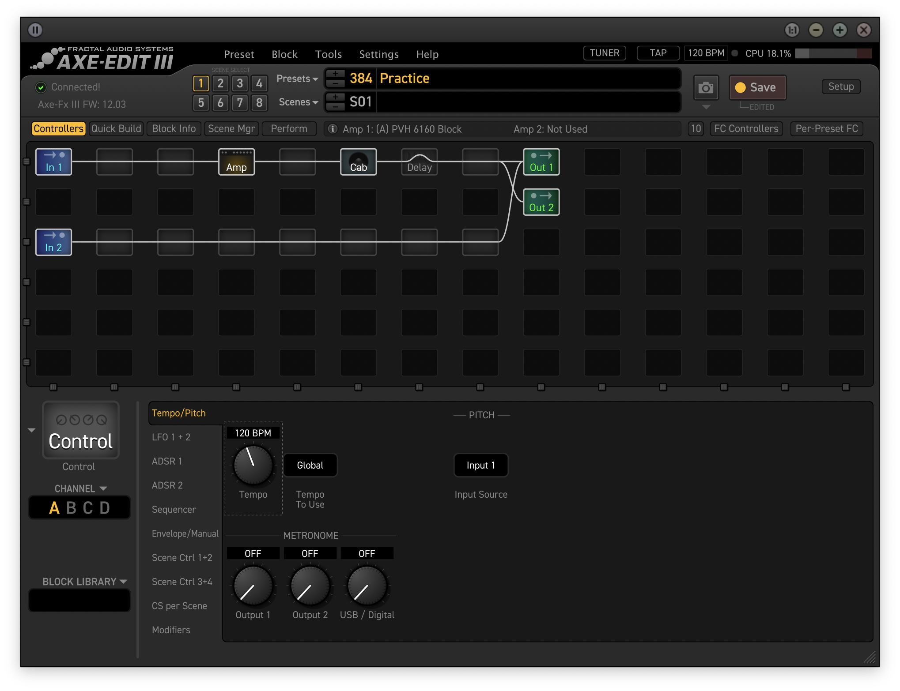

How I use Axe Fx III for Skype guitar lessons
Today is Aug 22, 2020.
High level overview
Here I'll explain the setup I have that allows me to have silent guitar lessons.
Silent here means that the only people who hear my guitar are me and the
recepient of the Skype call.
You'll need the following components to proceed:
I plug in guitar and headphones into the front panel of the Axe Fx, chose
my preset, create a stream of audio [mic + Axe Fx] and route that into
Skype.
Axe Fx configuration
The preset I use looks like this in Axe Fx III edit:

You can ignore the presence of in 2 and out 2 for now.
Loopback configuration
I have configured the loopback the following way:

Here 1 (L) and 2 (L) outputs of the Axe-Fx III device are
the left and right streams of the processed guitar sound, and
Internal microphone is the macbook's mic.
This essentially allows me to mix in my voice and guitar. I have the
flexibility of adjusting the levels if, for example, my voice can't be heard by
the recipient.
Skype configuration
In [Skype] --> [Audio & Video settings] I
configure Microphone and Speakers like this:

I also
use Test call during which I say something and play a little to
understand what the recipient will hear.
A note about metronome
Back to Axe Fx preset. One
constant struggle I have with Axe Fx III is metronome. There are
numerous threads
(e.g.
here)
where others describe inconvenience of the stock metronome, but I
haven't seen any improvements recently.
If I use the standard metronome from Axe Fx III, I need to keep in
mind that the
Output 1 level controls what *I* hear, and USB /
Digital controls what *recipient* hears. So using metronome
like this results in wasted time for adjusting levels (again, I can't
hear what recipient hears. Is it too loud for them? Or they can't hear
it at all? I will never know - I can only adjust following their
suggestions). Let's say I don't need a metronome for few minutes. Then
I need to remember to turn off volumes on both knobs and I need to
remember the values we have found so that I can restore it when
needed. Obviously the values of USB / Digital are always
configured on the spot since even my proximity to the microphone will
influence what level I should set the metronome too.

In addition, the metronome of Axe Fx III doesn't support placing
various accents (e.g. 3/8 with accent on 1st or 5/8 with accents on
1st and 3rd) - every click of it sounds absolutely the same.
Given all of the above, I decided it's worth the complication to use
the external metronome from the phone - I'm connecting the phone to
the Axe Fx III with Y-cable and that's where In 2 comes in.
Out 2 is used to have a separate audio stream with external
metronome - which I can then capture in the DAW.
Observed problems
Sometimes - under conditions which I have been too busy or lazy to
pinpoint exactly - the Axe Fx stops being treated as a sound
card completely. And some other times the recipient can only hear my voice
(but not guitar) or vice versa. In these cases I have found that unplugging
Axe Fx and plugging back into a *different* USB port does the trick.
Back to main page
© Copyright 2025, Iaroslav Tymchenko